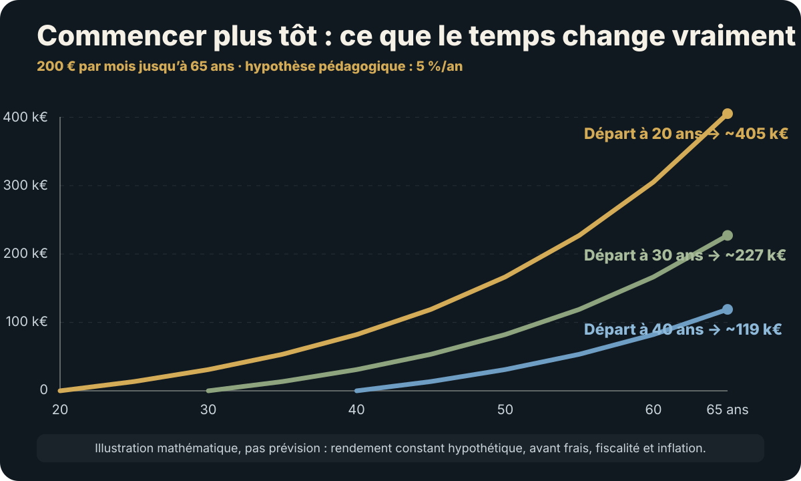

La réponse courte
Avec l’âge, trois choses changent en moyenne : le patrimoine accumulé augmente, l’horizon avant certains besoins se raccourcit et la part du revenu futur provenant du travail diminue. Cela pousse progressivement le pilotage de « construire » vers « protéger l’usage futur » puis « organiser les retraits et la transmission ». Mais l’âge ne doit jamais remplacer l’analyse des objectifs et des horizons.
1. Ce que montrent réellement les données françaises
Début 2024, le patrimoine brut médian des ménages varie fortement avec l’âge de la personne de référence :
| Âge | Patrimoine brut médian | 9e décile |
|---|---|---|
| Moins de 30 ans | 26 100 € | 296 400 € |
| 30–39 ans | 146 200 € | 620 100 € |
| 40–49 ans | 215 200 € | 850 000 € |
| 50–59 ans | 254 100 € | 1 021 900 € |
| 60–69 ans | 245 000 € | 1 024 700 € |
| 70 ans ou plus | 247 600 € | 900 500 € |
Ces chiffres décrivent ce que les ménages possèdent. Ils ne disent pas ce qu’un individu « devrait » avoir à tel âge. L’Insee observe par ailleurs que le patrimoine moyen progresse jusqu’aux environs de 60 ans, se stabilise puis diminue plus tard.
Source : Insee, enquête Histoire de vie et Patrimoine 2023–2024, publication du 7 avril 2026.
2. Pourquoi l’âge n’est qu’un raccourci
L’AMF recommande d’abord de relier chaque placement à son objectif, son horizon et sa capacité à supporter le risque. Un horizon court implique de ne pas exposer à une forte perte l’argent nécessaire au projet ; un horizon long permet d’envisager davantage de risque si la situation le permet.
Donc la vraie chaîne est :
Âge → événements probables → horizons → besoins de liquidité → capacité de risque → allocation
L’âge n’agit pas directement. Il modifie la probabilité et la proximité de certains besoins.
3. 20–30 ans : le patrimoine principal peut être le capital humain
À cet âge, les revenus futurs peuvent représenter une ressource économique bien plus importante que le portefeuille actuel. Une hausse durable de revenu de 300 € par mois peut transformer davantage le patrimoine futur qu’une optimisation marginale de 10 000 € déjà investis.
Priorités fréquentes :
- réserve de sécurité ;
- compétences, mobilité et employabilité ;
- éviter les dettes de consommation coûteuses ;
- commencer tôt sans immobiliser l’argent destiné aux projets proches ;
- comprendre les enveloppes avant de multiplier les produits.
Quand la réponse s’inverse : un jeune entrepreneur au revenu très instable peut avoir besoin d’une réserve beaucoup plus forte qu’un salarié de 50 ans très sécurisé.

4. 30–45 ans : les engagements deviennent structurants
Logement, enfants, crédit, changement de carrière ou création d’activité rendent la liquidité plus importante. Le patrimoine peut croître vite tout en devenant moins flexible.
| Question | Pourquoi elle devient centrale |
|---|---|
| Combien de dette immobilière ? | Le levier peut accélérer la construction mais réduire la marge de manœuvre. |
| Combien de patrimoine dans la résidence principale ? | Le patrimoine peut être élevé sur le papier et peu mobilisable. |
| Quelle réserve hors apport ? | Achat, travaux et enfants créent des dépenses imprévues. |
| Quel capital long terme reste réellement disponible ? | Les projets à 2–5 ans ne doivent pas être confondus avec la retraite. |
5. 45–60 ans : le temps de rattrapage devient plus court, mais le patrimoine peut accélérer
Les revenus peuvent atteindre leur sommet tandis que certains crédits diminuent. C’est souvent la période où la capacité d’épargne devient forte. Mais le coût d’une erreur de concentration augmente car le temps avant l’usage du capital se réduit.
Priorités : mesurer précisément les droits à retraite, réduire les concentrations involontaires, organiser les enveloppes, tester la dépendance à un seul revenu, préparer les gros projets et commencer à réfléchir à la transmission si le patrimoine devient significatif.
6. 55–65 ans : la bascule accumulation → utilisation doit être préparée avant le départ
La grande erreur consiste à attendre le jour de la retraite pour découvrir que le portefeuille doit désormais financer un flux annuel. Il faut préparer la transition plusieurs années avant :
- besoin annuel après pensions ;
- liquidité disponible ;
- ordre des retraits ;
- risque de baisse de marché au début de la retraite ;
- travaux immobiliers futurs ;
- assurance, santé, conjoint et dépendance ;
- objectifs de transmission.
→ Retraite et décumulation : transformer le patrimoine en revenus
7. 60–75 ans : sécuriser l’usage sans tuer la croissance
Une retraite peut durer plusieurs décennies. Tout sécuriser au premier jour peut protéger contre la volatilité immédiate mais augmenter l’exposition à l’inflation et à la longévité. À l’inverse, conserver un portefeuille trop agressif peut forcer des ventes après une baisse.
La solution n’est pas un pourcentage magique d’actions selon l’âge. Elle consiste à séparer les horizons : dépenses proches, besoins intermédiaires, capital de long terme et transmission.
8. 70 ans et plus : simplicité, liquidité et transmission prennent du poids
Le patrimoine ne doit pas forcément devenir défensif parce que son détenteur vieillit : une partie peut avoir un horizon de transmission très long. Mais la capacité opérationnelle à gérer une architecture compliquée peut devenir un risque en soi.
Questions nouvelles :
- Le conjoint ou les enfants comprennent-ils où sont les actifs ?
- Les clauses bénéficiaires sont-elles à jour ?
- Le patrimoine contient-il assez de liquidité ?
- Des biens immobiliers exigent-ils trop de gestion ?
- Une donation maintenant serait-elle plus utile que transmettre plus tard ?
- Le détenteur conserve-t-il assez de ressources pour sa propre longévité et sa dépendance ?
9. Le mythe de la « bonne allocation selon l’âge »
Deux personnes de 65 ans peuvent raisonnablement avoir des allocations très différentes.
| Profil A | Profil B |
|---|---|
| Pension couvre 100 % des dépenses essentielles | Pension couvre 55 % des dépenses |
| Patrimoine financier largement excédentaire | Patrimoine nécessaire pour vivre |
| Objectif de transmission long terme | Retraits importants dès maintenant |
| Peut supporter une forte volatilité | Risque de vente forcée |
L’âge est identique ; la capacité de risque ne l’est pas.
10. La résidence principale change la lecture du cycle de vie
Un logement remboursé réduit fortement certaines dépenses de retraite, mais concentre aussi le patrimoine. À 65 ans, 600 000 € de patrimoine dont 550 000 € de résidence principale ne financent pas les dépenses comme 600 000 € de patrimoine majoritairement financier.
Le pilotage doit donc distinguer valeur patrimoniale et capacité à produire de la liquidité ou du revenu.
11. Le moment de transmettre n’est pas forcément le décès
Une aide de 50 000 € peut avoir davantage d’impact pour un enfant de 32 ans qui achète son logement que vingt ans plus tard. Mais donner tôt réduit la propre marge de sécurité du parent.
La bonne question n’est pas « à quel âge faut-il donner ? » mais à partir de quel niveau d’excédent patrimonial le don ne fragilise plus les besoins futurs plausibles du donateur ?
12. Les cinq transitions qui comptent plus que l’anniversaire
- Premier revenu stable.
- Premier engagement immobilier important.
- Passage salarié → indépendant ou forte instabilité professionnelle.
- Retraite à moins de cinq ans.
- Patrimoine devenu suffisamment excédentaire pour que la transmission soit un objectif distinct.
Un site patrimonial utile devrait déclencher une revue à ces événements plutôt qu’à chaque décennie ronde.
13. Une grille par phase, pas par âge rigide
| Phase | Question dominante | Indicateur à surveiller |
|---|---|---|
| Construire | Combien puis-je épargner durablement ? | Taux d’épargne / revenus futurs |
| Consolider | Mon patrimoine est-il trop concentré ? | Allocation globale / dette |
| Préparer l’usage | Quels besoins arrivent dans 5–10 ans ? | Liquidité par horizon |
| Décumuler | Combien retirer sans me fragiliser ? | Gap annuel / durée / flexibilité |
| Transmettre | Quel capital est réellement excédentaire ? | Marge après besoins de longévité |
14. Quels comptes et enveloppes deviennent utiles selon la phase ?
Pour un débutant, parler seulement de « réserve », « long terme » ou « diversification » reste trop abstrait. Voici la traduction en outils concrets. Ce tableau indique quand un produit mérite d’être étudié, pas l’âge auquel il devient obligatoire.
| Situation | Outils à regarder en premier | Pourquoi | Ce qu’il ne faut pas précipiter |
|---|---|---|---|
| Budget encore fragile / réserve incomplète | LEP si éligible, Livret A, LDDS | Argent disponible, capital non exposé aux marchés, intérêts des livrets réglementés exonérés d’impôt sur le revenu et de prélèvements sociaux. | Immobiliser l’épargne de secours ou chercher du rendement avec l’argent du prochain imprévu. |
| Réserve solide + premier capital vraiment long terme | PEA pour une exposition actions compatible ; une assurance-vie de qualité si elle a une fonction plausible ; PEE à comparer si l’employeur apporte un abondement. | Le premier versement lance l’ancienneté du PEA ; l’assurance-vie acquiert aussi une ancienneté utile. Ouvrir avec peu et investir massivement sont deux décisions différentes. | Ouvrir cinq enveloppes ou investir l’apport immobilier / la réserve uniquement pour « prendre date ». |
| Accumulation régulière | Réserve réglementée + PEA + éventuellement assurance-vie | Les fonctions se séparent : sécurité immédiate, croissance long terme, puis complément flexible selon supports et objectifs. | Multiplier les contrats sans objectif, ou utiliser le CTO alors que l’exposition tient simplement dans une enveloppe plus adaptée. |
| Foyer, immobilier, patrimoine qui se complexifie | PEA et assurance-vie à organiser ; deuxième assurance-vie seulement avec une raison ; protection/prévoyance à vérifier ; PER à étudier au cas par cas. | La diversification ne concerne plus seulement les actifs : assureurs, bénéficiaires, liquidité, dette et dépendance aux revenus comptent aussi. | Considérer le PER comme obligatoire parce que la retraite existe ou ouvrir plusieurs assurances-vie par réflexe. |
| 45–60 ans / capacité d’épargne souvent plus forte | Audit des PEA/assurances-vie existants ; retraite et bénéficiaires ; PER si l’économie fiscale et l’horizon compensent la contrainte. | Le temps avant usage se raccourcit alors que le patrimoine peut accélérer : l’organisation des enveloppes devient aussi importante que leur ouverture. | Ajouter des produits au lieu de corriger frais, concentration, mauvais bénéficiaires ou absence de liquidité. |
| Retraite à quelques années | Livret/monétaire pour les besoins proches ; PEA, assurance-vie et PER organisés par horizon et ordre de retrait. | Le portefeuille doit bientôt financer des flux : la séquence de décumulation devient une décision de premier rang. | Tout sécuriser d’un coup ou, à l’inverse, conserver en marché l’argent nécessaire aux premières années. |
| Retraite / transmission | Liquidité simple, assurance-vie et autres actifs conservés selon leur rôle ; architecture progressivement simplifiée. | Une partie du capital peut rester long terme, mais accessibilité, compréhension par le conjoint/proches et transmission prennent plus de poids. | Conserver une usine à gaz pour un avantage fiscal marginal. |
Une ou plusieurs assurances-vie ?
Pour un débutant, une bonne assurance-vie suffit généralement. Un deuxième contrat devient rationnel s’il apporte une fonction distincte : autre assureur, meilleurs supports, séparation claire d’objectifs ou de bénéficiaires, ou conservation de l’ancienneté d’un vieux contrat pendant que les nouveaux versements vont vers un contrat plus efficace. « En avoir plusieurs » n’est pas un objectif patrimonial.
Et le PER ?
Il ne constitue pas une marche obligatoire après le PEA et l’assurance-vie. Il devient intéressant lorsque l’argent est réellement destiné à la retraite, que la liquidité plus faible est acceptable et que l’avantage fiscal attendu justifie les règles de sortie. Le bon âge n’existe pas ; le bon arbitrage fiscal et temporel, oui.
Repères réglementaires : Service-Public — fiscalité des livrets réglementés · Bercy — PEA et date du premier versement · Service-Public — assurance-vie · Service-Public — PER individuel.
→ Comparer en détail PEA, assurance-vie, CTO et PER · Premier investissement : passer de la réserve au marché →
15. L’âge ne suffit pas : ajoutez votre niveau de maturité patrimoniale
Deux personnes du même âge peuvent être à des étapes totalement différentes. Pour savoir ce qui vient réellement ensuite, ajoutez cinq mesures à l’âge : marge mensuelle, mois de réserve, capital réellement investissable, runway en années de dépenses et pourcentage des dépenses que le patrimoine pourrait financer.
Exemple
À 45 ans, posséder 80 000 € ne signifie pas automatiquement « diversifier davantage ». Si 50 000 € financent un apport prévu, 15 000 € la réserve et 10 000 € des travaux proches, le capital long terme n’est que 5 000 €. La bonne étape est déterminée par la fonction de l’argent, pas par le montant brut.
16. Le standard Contre-Évidence
Plutôt qu’une règle « âge = allocation », chaque revue patrimoniale doit poser six questions :
- Quels sont mes objectifs aujourd’hui ?
- Quand l’argent devra-t-il être utilisé ?
- Quel revenu futur puis-je encore raisonnablement attendre ?
- Quelles dépenses ou dettes vont disparaître ou apparaître ?
- Quelle baisse puis-je supporter sans vendre au mauvais moment ?
- Quelle part du patrimoine est destinée à moi, à mes projets ou à d’autres personnes ?
La différence
Les standards de cycle de vie sont utiles comme carte. Ils deviennent dangereux lorsqu’on les transforme en pilote automatique.